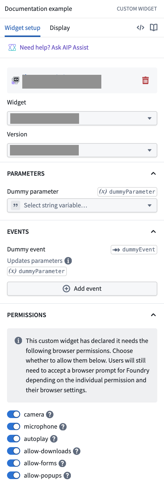

:::callout{theme="neutral"} Certain browser permissions, such as camera and microphone access, always require application users to grant permission to Foundry through a browser prompt. Enabling the iframe attributes allows the application to request access, but the user must still grant permission explicitly. Refer to the Permissions Policy documentation â for more information. :::
The custom widgets runtime uses an <iframe> â element with restrictive attributes that disallow certain browser features, such as popups and camera access, by default. However, widget developers can enable a subset of attribute values for a custom widget. The application builder must then manually grant permission to the requested attribute values for them to take effect. Often, the widget developer and application builder are the same person. Most widgets do not need to request additional iframe attributes; only request these permissions when your widget requires browser capabilities such as camera access, automatic media playback, or file downloads.
Widget developers can request enablement of the following iframe attributes:
allow â attribute values:
cameramicrophoneautoplaysandbox â attribute values:
allow-downloadsallow-formsallow-popupsWidget developers can declare requested iframe attributes in the permissions field of their custom widget configuration:
export default defineConfig({
id: "widgetId",
name: "A custom widget",
description: "A widget description",
type: "workshop",
parameters: {},
events: {},
permissions: ["camera", "allow-popups"],
});
:::callout{theme="neutral"} Opting in to certain iframe attributes may require the application builder to acknowledge a checkpoint. :::
In Workshop, application builders can grant permission to requested iframe attributes when configuring a custom widget. The Permissions section, found after the Parameters and Events sections, displays these settings.

During development, you can temporarily permit requested iframe attributes for testing. Use the custom widgets playground or a VS Code workspace without explicitly granting the attributes in a host application.
The following example requires the camera and microphone iframe allow attribute values to be enabled.
The navigator.mediaDevices.getUserMedia â method may be used to prompt the user for permission to use a media input (the camera and microphone in this example) and returns a MediaStream â object if successful.
const mediaStream = await navigator.mediaDevices.getUserMedia({
video: true,
audio: true,
});
Additionally, the Permissions API â may be used to query the current status of browser permissions. The returned values may be "granted", "prompt" or "denied" based on the iframe attributes and user browser prompt status.
navigator.permissions.query({ name: "camera" });
navigator.permissions.query({ name: "microphone" });
The widget developer should ensure that cases where attribute access is not available are gracefully handled.
The following example requires the autoplay iframe allow attribute value to be enabled.
The autoplay â attribute may be used on an <audio> or <video> element to autoplay media.
<video src={myVideoSrc} autoplay controls />
The following examples require the allow-downloads iframe sandbox attribute value to be enabled.
A Blob â can be constructed with the contents of a CSV and downloaded in the browser:
<button
onClick={() => {
const csv = "a,b,c\n1,2,3";
const blob = new Blob([csv], { type: "text/csv" });
const url = URL.createObjectURL(blob);
triggerDownload(url, "data.csv");
URL.revokeObjectURL(url);
}}
>
Download CSV
</button>
The triggerDownload helper function temporarily creates an <a> element to trigger the download:
function triggerDownload(url: string, filename: string) {
const a = document.createElement("a");
a.download = filename;
a.href = url;
document.body.appendChild(a);
a.click();
a.remove();
}
Two methods are described below for downloading static assets included in a custom widget. Review the Vite Static Asset Handling â documentation for more information.
:::callout{theme="warning"}
In custom widget dev mode, the dev server provides assets from a different origin (for example, localhost) than the custom widget runtime. This behavior may cause the browser to open a new tab rather than trigger a download. However, when using the custom widget in production, the assets will correctly trigger a download.
:::
When using the Vite method to import a static asset as a URL â, the asset URL may be used directly in an <a> element href attribute together with the download attribute:
import imgUrl from "./img.png";
<a href={imgUrl} download="img.png" target="_blank" rel="noreferrer">
Download
</a>;
When using the Vite public directory â, the assets in the public directory should be referenced using the root absolute path; for example, public/img.png should be referenced as /img.png in code:
<a href="/img.png" download="img.png" target="_blank" rel="noreferrer">
Download
</a>
An alternative method uses fetch, possibly performs additional processing, then downloads as a Blob â, similar to the method for dynamically creating a CSV (blob). An example of additional processing could be to replace values inside the fetched static asset with user provided input.
When using the Vite method to import a static asset as a URL â we recommend also enforcing no inlining â to avoid content security policy (CSP) issues with data: URIs:
import imgUrl from "./img.png?no-inline";
<button
onClick={async () => {
const response = await fetch(imgUrl);
const blob = await response.blob();
// optional: perform additional processing
const objectUrl = window.URL.createObjectURL(blob);
triggerDownload(objectUrl, filename);
window.URL.revokeObjectURL(objectUrl);
}}
>
Download
</button>;
When using the Vite public directory â, the assets in the public directory should be referenced using the root absolute path; for example, public/img.png should be referenced as /img.png in code:
<button
onClick={async () => {
const response = await fetch("/img.png");
const blob = await response.blob();
// optional: perform additional processing
const objectUrl = window.URL.createObjectURL(blob);
triggerDownload(objectUrl, filename);
window.URL.revokeObjectURL(objectUrl);
}}
>
Download
</button>
The triggerDownload helper function temporarily creates an <a> element to trigger the download:
function triggerDownload(url: string, filename: string) {
const a = document.createElement("a");
a.download = filename;
a.href = url;
document.body.appendChild(a);
a.click();
a.remove();
}
:::callout{theme="neutral"}
When developing in Workshop, we recommend creating a Workshop event to open links; this method avoids the need to request additional iframe attributes. Additionally, new tabs or windows opened in the method described below with allow-popups inherit the custom widget's sandbox restrictions which requires extra care. For example, if an opened tab or window needs to download files then allow-downloads must also be enabled for the custom widget.
:::
The following example requires the allow-popups iframe sandbox attribute value to be enabled:
An <a> element can be used with the href and related attributes to open a link in a new tab:
<a href="https://palantir.com/docs" target="_blank" rel="noreferrer">
Link
</a>